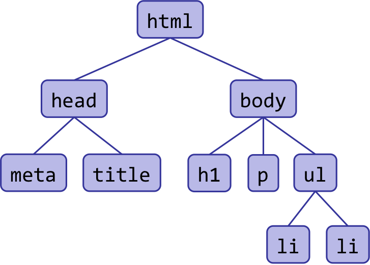
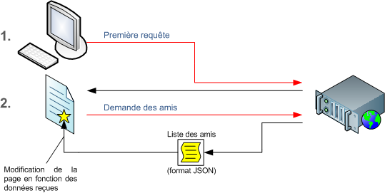

<!doctype html>
<html lang="en">
	<head>
	<meta charset="utf-8">
		
    <title>Initiation aux javascript</title>

    <meta name="apple-mobile-web-app-capable" content="yes" />
    <meta name="apple-mobile-web-app-status-bar-style" content="black-translucent" />

    <meta name="viewport" content="width=device-width, initial-scale=1.0, maximum-scale=1.0, user-scalable=no">

    <link rel="stylesheet" href="assets/reveal-9974d4a9e2941e274411dc432fb61e2a.css">

    <script>
      if( window.location.search.match( /print-pdf/gi ) ) {
        var link = document.createElement( 'link' );
        link.rel = 'stylesheet';
        link.type = 'text/css';
        link.href = 'assets/reveal_print-a878ff7dc3171f2186ba38d00eac4cb9.css';
        document.getElementsByTagName( 'head' )[0].appendChild( link );
      }
    </script>
  </head>

  <body>

    <!-- <div class="print">
      <a href="/workshops/landing/?print-pdf">PDF-friendly</a>
    </div> -->

    <div class="reveal">
      <div class="slides">
        <section data-markdown data-separator="^---$" data-vertical="^--$" data-notes="^Note:">
          	<script type="text/template">
-
# TECH BACKPACK
## INITIATION AU JAVASCRIPT
---

## LANGAGE CLIENT
- Langage jeune lancé il y a 20 ans
- Concept: s'éxecute dans le navigateur
- Testons dans un navigateur via la console

```
alert('bonjour');

```
--

## INTERAGIR AVEC UNE PAGE
- Animons la page Premier Jour
- Simulons une interaction sur la page de SPIN

```
$('.arrow_down').click()

```

---
## ENVIRONNEMENT DU DEVELOPPEUR

- Editeur de texte
- Créer un dossier et une premiere page web
- Ajouter une alerte !
- créer un fichier script.js


```
<!DOCTYPE html>
<html lang="en">
	<head>
		<meta charset="utf-8">
    	<title>Intro JS</title>
	</head>
	<body>
   		<h1> Welcome !!! </h1>

	</body>
</html> 
```
--
## LE FICHIER DE SCRIPT
- appeler un fichier javascript
- onglet network
- insertion du script.js

---
# JSBIN

Démos dans JSBIN

--
## DATA TYPES NUMBERS
 100 0, 3.1, 56 
```
console.log(1 + 1);
console.log(1 - 1);
console.log(4 / 2);
console.log(4 * 2);
```

--
## DATA TYPES BOOLEAN 
- Uniquement 2 valeurs: TRUE , FALSE
- Fondamentale pour faire du code en fonction de conditions
- Si j'ai soif je bois un verre 

--
## DATA TYPES STRING 
- chaine de caractére : "DailyChallenge" , "The Daily Challenge", "x" , ""
--

## DATA TYPES OBJET 
- Tableau : liste de String, liste de Numbers
- Collection: 
Système clé valeur comme un dictionnaire. 
- First_name est la clé , John est la valeur

```
["Défi numéro 1 ", "Défi numéro 2", "Défi numéro 3", "Défi numéro 3"]
```

```
{ "first_name":"John",
  "last_name" : "Do"
}
```
--
## DATA TYPES NULLE 

- NULL
- UNDEFINED

--

## COMPATIBILITE NAVIGATEUR
- Executé sur le client on a pas la main dessus !
- Des comportements différents entre les navigateurs

--

## VARIABLE
- Le processeur calcule et la mémoire vive stocke les variables
- C‘est une boite ! Je stocke une String dans une variable = Je stocke une donnée dans une boite

```
//Affectation de variable
var firstName ="John";
console.log(firstName);
console.log(firstName);
```
--

## CONCATENATION

```
var firstName ="John";
var latsName="Do"
console.log(firstName lastname );
```

```
var firstName ="John";
var latsName="Do";
var fullName= firstName + latsName;
console.log(fullName);
console.log(firstName + latsName);
```

--

## SOYEZ STUPIDE
Mettez vous à la place de l'ordinateur !

--

## REAFECTATION

Ce qui est stocké dans la variable peut évoluer
```
var age = 30;
console.log("J'ai "+ age +" ans ");

age = age+1;
console.log("J'ai "+ age +" ans ");
```

--

## CONDITION

- if then else
- Attention si j'ai une majuscule ou un espace le test d'égalité ne marche pas

```
var body="thirsty""

if(body==='thirsty'){
	console.log("Prends un verre");
}

```

--

##CONDITION

Deux possibilités
```
var body="thirsty"

if(body==='thirsty'){
	console.log("Prends un verre" );
}else{
	console.log("Fume une clope" );
}
```

--

## CONDITION

- Trois possibilités
- L‘ordre est important !

```
var body="thirsty"

if(body==='thirsty'){
	console.log("Prend un verre" );
}else if ( body==="drunk" ) {
	console.log("Rentre chez toi !" );
}else{
	console.log("Fume une clope" );
}
```

--

## Boolean 
var result = a && b

- false + false ->  false 
- false + true ->  false 
- true + false ->  false 
- true + true -> true 


```
var thirsty=true;
var drunk=true;

if(thirsty && drunk){
	console.log("Rentre chez toi!" );
}
```

--

## Boolean 
var result = a ||  b

- false + false -> false 
- false + true ->  true 
- true + false -> true 
- true + true ->  true 


```
var day="samedi";

if(day==="samedi" || day==="dimanche" ){
	console.log("C'est le weekend" );
}
```

--

## Logical not 
var result = ! a ;

- false ->  true 
- true  -> false 


```
var drunk=true;

if(!drunk ){
	console.log("Bois un verre );
}

var body="drunk";

if(body!=="drunk" ){
  console.log("Bois un verre );
}

```

--
## EN PRATIQUE

Afficher tous les défis qui commencent par la lettre F; 

```

var challenge1="Sauter du haut d'un plongeoir olympique";
var challenge2="Préparer un diner monochrome";
var challenge3="Faire un selfie en tapant dans ses mains";
var challenge4="Se jeter sur un mur en imitant Spiderman";

var challenges="";

if (challenge1[0]==="S"){
	challenges = challenges + challenge1;
}

if (challenge2[0]==="S"){
	challenges = challenges + challenge2;
}

if (challenge3[0]==="S"){
	challenges = challenges + challenge3;
}

if (challenge4[0]==="S"){
	challenges = challenges + challenge4;
}

console.log(challenges);


```

--
## LOOPS : for , while

- permet de répéter une opération plusieurs fois;
- attention à bien définir la condtion d'arret

```
var challenges = ["Sauter du haut d'un plongeoir olympique";", "Préparer un diner monochrome", "Faire un selfie en tapant dans ses mains"];
challenges.length;
challenges[0];
challenges.push("Se jeter sur un mur en imitant Spiderman");
challenges.length;

var i=0;
for ( var i=0; i < challenges.length; i++) {
	console.log(challenges[i])
}
```

--
## EN PRATIQUE

```
var challenges = ["Sauter du haut d'un plongeoir olympique";", "Préparer un diner monochrome", "Faire un selfie en tapant dans ses mains","Se jeter sur un mur en imitant Spiderman"];

var filteredChallenge=[];

for ( var i=0; i < challenges.length; i++) {

	var challenge=challenges[i];
	
	if (challenge[0]==="A"){
		filteredChallenge.push(challenge);
	}
	
}

console.log(filteredChallenge);
```

--

## WHILE
- Equivalent à la boucle for

```
var i=0;
while(i < villages.length){
	console.log(villages[i]);
	i+=1;
}
```

--
## LES 3 PILIERS
- La variable
- La condition
- La boucle

--

## LES FONCTIONS

- La fonction est une boite avec en entrée des variables et une sortie
- Evite de repeter du code

```
function fullName(first,last){
	return first + " " + last;
}

console.log(nomComplet("Bob","Marley"));
console.log(nomComplet("Bob","Sinclar"));
```

--
## EN PRATIQUE

```
var challenges = ["Sauter du haut d'un plongeoir olympique";", "Préparer un diner monochrome", "Faire un selfie en tapant dans ses mains","Se jeter sur un mur en imitant Spiderman"];

function filterChallenge(letter){
	var result=[];

	for ( var i=0; i < challenges.length; i++) {

		var challenge=villages[i];
		
		if (challenge[0]===letter){
			result.push(challenge);
		}
	
	}
	return result;
}

console.log(filterChallenge("A"));
console.log(filterChallenge("S"));

```

---

## UN ARBRE


--


--
Le DOM HTML est un arbre est composé de noeuds et de branches<br>
Chaque parent est unique


--
Le HTML est la representation texte d‘un arbre

<br>


```
<!DOCTYPE html>
<html lang="en">
	<head>
		<meta charset="utf-8">
    	<title>Cours JS</title>
	</head>
	<body>
   		<h1> Bonjour </h1>

	</body>
</html> 
```

--
#JQUERY

Permet de sélectionner des éléments et de jouer avec.<br>
Un code unique pour les différents navigateurs
<br><br>

```
src="http://code.jquery.com/jquery-1.12.0.min.js"
$( document ).ready(function() {
    console.log( "ready!" );
});
```

--

##DOM Manipulation

Le sélecteur <br><br>

```
// Selectione une balise 
$("p").hide();

// Selectione un id <div id="mabalise">
$("#mabalise").hide();

// Selectione une class <div class="maclass">
$(".maclass").hide();

```
<br><br>

A tester dans la console !

--
##Demo 1

Coder une page HTML ou tous les paragraphes sont en rouge

-  Creer votre structure HTML
-  Ajouter un fichier de script et l‘appel à la librairie JQUERY
-  Coder votre script
-  Utiliser la fonction $(".maclass").addClass(); de jquery

--

##EVENTS Handling

Simulation événement 
```
$("p").click();

```
Le sysétme de callback réagit à un événement en posant des listener<br><br>
```
 	$( "p" ).on( "click", function() {
  		$("p").addClass('red');
	});
```

--

## THIS 

L‘objet this permet d‘agit sur l‘élément cliqué <br><br>
```
 	$( "p" ).on( "click", function() {
  		$(this).addClass('red');
	});
```
--

##Demo 2

Au clique passer un paragraphe en rouge et le remettre en noir au second clique <br> <br>
<i>Utiliser $(this).hasClass('maclass') qui renvoie true or false si l‘élément contient la class</i>

---

#AJAX

Permet d‘aller chercher l‘information sans recharger la page <br>

Exemple: gmail , facebook ...

On l’utilise souvent pour raffraichir des petits bouts de HTML 
dans le but d’éviter des temps de chargement longs et des requêtes vers les serveurs trop lourdes à gérer.

--
 <br><br>
Différents formats TEXTE / HTML / XML / JSON
--
##FORMATS

``` 
<challenges>
    <ch nom="Le grand splash" category="piscine"  />
    <ch nom="One color dinner" category="repas"  />
    <ch nom="Selfie tap tap" category="selfie"  />
    <ch nom="Do it like Spiderman" category="superhero"  />
 </challenges
```
--
##FORMATS JSON
Le JSON est une manière de structurer l‘information en utilisant la syntaxe objet de JavaScript – des objets et des tableaux<br>
Moins verbeux que l‘XML

```
var challenges = [
  {"nom":"Le grand splash", "category":"piscine"},
  {"nom":"One color dinner", "category":"repas"},
  {"nom":"Selfie tap tap", "category":"selfie"},
  {"nom":"Do it like Spiderman", "category":"superhero"}
]

console.log(challenges[1].nom);

```

--
##AJAX & JQUERY


```
   src="https://ajax.googleapis.com/ajax/libs/jquery/3.2.1/jquery.min.js" 

```


```
 $.ajax( "https://s3.eu-central-1.amazonaws.com/spintransfer/challenge.json" )
  .done(function(data) {
    console.log( "success:"+data );
  })
  .fail(function() {
    alert( "error" );
  });
```
--
## ASYNCHRONE

Un script est synchrone quand un appel est réalisé au serveyr, le script  attend la réponse.

Un script est asynchrone,  quand le script principal n‘attend pas davoir reçu les données pour continuer.

La requête AJAX est asynchrone. 

--
## CALLBACK

Une fonction callback est exécutée quand la requête aboutit à quelque chose (que son traitement est fini). Et c‘est cette fonction de callback qui va se charger de récupérer les données renvoyées par la requête.

```

function loadChallenges() {
    alert("Appel du serveur")

    $.ajax({
        url : 'https://s3.eu-central-1.amazonaws.com/spintransfer/challenge.json',
        type: 'GET',
        success : showChallenges
    })
}

function showChallenges(data) {
    console.log(data);
}


//Charge le JSON des villages
loadChallenges();

```

--

##Demos 3

Afficher la liste des challenges dynamiquement en appelant un fichier json depuis un serveur

--
#COOKIES

Un cookie est un fichier stocké sur le disque dur de l‘utilisateur.<br>
Un cookie permet de créer une association entre la session de l‘utilisateur et les données le concernant. <br>
Les cookies font partie des spécifications du protocole HTTP<br>

--
##PROTOCOLE HTTP

Le protocole HTTP permet un échange de messages entre le client et le serveur grâce à des requêtes et des réponses HTTP.<br>
Un de ces en-têtes est dédié à l‘écriture de fichiers sur le disque dur : les cookies.<br>

```
Set-Cookie : NOM=VALEUR; domain=NOM_DE_DOMAINE; expires=DATE

```
Lorsqu‘un client se connecte à un site (donc au serveur), les cookies pour le domaine et le chemin spécifié sont automatiquement envoyés dans les en-têtes de la requête HTTP.

--

##LIMITIATIONS COOKIE

Le nombre total des cookies est limité à 300.
<br>La taille maximale d‘un cookie est de 4 ko.
<br>Il ne peut exister au maximum que 20 cookies par domaine.

--
##Manipuler les cookies

```

function setCookie(cname, cvalue, exdays) {
    var d = new Date();
    d.setTime(d.getTime() + (exdays*24*60*60*1000));
    var expires = "expires="+d.toUTCString();
    document.cookie = cname + "=" + cvalue + "; " + expires;
}

function getCookie(cname) {
    var name = cname + "=";
    var ca = document.cookie.split(';');
    for(var i=0; i<ca.length; i++) {
        var c = ca[i];
        while (c.charAt(0)==' ') c = c.substring(1);
        if (c.indexOf(name) == 0) return c.substring(name.length, c.length);
    }
    return "";
}

```
--
##En pratique


```
function checkCookie() {
    var user = getCookie("username");
    if (user != "") {
        alert("Welcome again " + user);
    } else {
        user = prompt("Please enter your name:", "");
        if (user != "" && user != null) {
            setCookie("username", user, 365);
        }
    }
}
```


--
#Ressources

 <br>
- https://developer.mozilla.org/fr/docs/Web/JavaScript<br>
- http://learn.jquery.com


	    	</script>
        </section>
      </div>
    </div>
	
	<script src="assets/reveal-a0e68e2b79d16612fdc7661fc2e939a5.js"></script>

    <script>

      // Full list of configuration options available here:
      // https://github.com/hakimel/reveal.js#configuration
      Reveal.initialize({
        width: 1280,
        height: 800,
        controls: true,
        progress: true,
        history: true,
        center: true,
        slideNumber: true,
        
        theme: Reveal.getQueryHash().theme, // available themes are in /css/theme
        transition: 'linear',  // default/cube/page/concave/zoom/linear/fade/none
        dependencies: [
          { src: 'assets/highlightjs/highlight.min-25c76b21f7ba243879388141435e292c.js', async: true, callback: function() { hljs.initHighlightingOnLoad(); } }
        ]
      });

    </script>
	</body>

</html>
